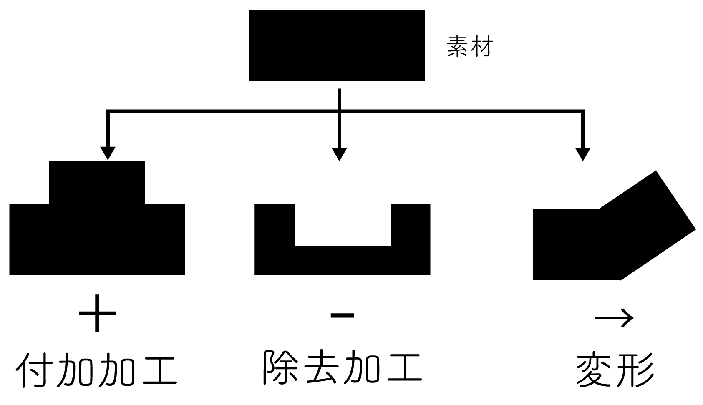

3DPrinting
■造形に関する加工のタイプ

3Dプリンティングは付加加工、付加製造であり、Additive Manufacturingとよばれている。
---ここから外部サイトへのリンク集です----
■3Dプリンターの主な造形方法
■
FDM
（材料押出堆積方式/熱溶解積層方式）（材料：
PLA、ABS
など）
よくみる3Dプリンター
■光造形方式（材料：熱硬化性樹脂）
|
|----SLA(Stereolithography)
|----DLP(Digital Light Processing)
SLAとDLPの違い
■インクジェット（材料：熱硬化性樹脂）
|
|----マテリアルジェッティング（材料：光硬化性樹脂、ワックスなど）
|----バインダージェッティング（材料：石膏パウダー、樹脂パウダーなど）
マテリアルジェッティングと バインダージェッティングの違い
（HPの
metal jet
）
■粉末焼結積層造形
|
|----
SLS
（Selective Laser Sintering）
|----SLM（Selective Laser Melting）
SLSとSLMの違い
■産業
BMW
ポルシェ
GE
Smile Direct Club
adidas
■神奈川大学のファブラボにある3Dプリンター
■FDM
Ender-3 S1 Pro
Ultimaker 2 Extended +
■光造形方式(SLA)
Form2
------- 洗浄装置
Form Wash
■3Dデザインソフトウェア
Fusion
Blender（3DCG）
MeshMixer
----
使い方
■3Dファイル
stl, step(stp), iges(igs), dxf, dwf, dwg, objなど
参考
■スライサーソフト
3Dプリンターで出力する際は,スライサーソフトで3Dモデル（stlファイルなど）をGコードと呼ばれるスライスデータに変換する
Cura
（無料：授業ではこれを使います）
Simplify3D
(有料）
PsuraSlicer
(無料）
■サポート
サポートについて
サポート材をつけないような設計
■ブリム、ラフト、スカート
ブリムなど密着性を高める
■3Dデータのダウンロードサイト
thingiverse
grabcad
fabble
(作り方の共有サイトで3Dデータある場合もある)
スミソニアン博物館
----ここまで外部サイトへのリンク集でした---
■過去の学生作品例）
ペットボトルホルダー
複雑な形状
チェーン構造
チェーン構造でつくったバック
(
このデータ
を利用)
3DScanning
■
3Dスキャナー
3Dスキャンした腕
義足（インスタリム）
Assignment1（課題：必須）
進化の模索：3Dプリント&ドキュメンテーション
・ピンセットを進化させて3Dプリントしてください。サイズ制限(長さ50mm×幅20mm×高さ5mm)
アイディアの発散work
3Dプリントまでの手順
(絶対に読んでください)
・指定日までに自分のWebページに下記の内容を載せてください
作品のタイトル
構想段階の手書きスケッチ、ストーリーボードなどの写真（
例1
、
例2
）（画像のサイズは落としましょう）
実際に作った作品の画像（画像のサイズは落としましょう）
---Macでの写真サイズの変更方法(
doyolab
)
---Windowsでの写真サイズの変更方法(
外部サイト
)
設計ファイル(stlファイルをfilesフォルダにいれて、そこにリンクを貼ってください)
googleサイトを使っている方は
ここ（外部サイト）
を参考にfusionの共有リンク機能を使ってください。
作品の説明
なぜこの作品を作ろうという想いに至ったか
制作プロセスの中で調べたこと（ソフトの機能、参考にしたリンク、試したパラメータ等）のメモや画像
（作っている途中に写真を撮ったり、スクリーンショットをとる習慣をつけましょう）
(できれば)YouTubeに作ったものを使用している動画をアップして、自分のWebページにリンクを貼る
(GitHubには絶対に動画ファイルをアップロードしないでください。Youtubeを利用してください。)
その他作ったものがあれば、どんどん載せてください。
・過去の学生の例
■先輩の例
意味深い進化
ミル
--Fingertip --身体の拡張
莉子
--「つまむ」ではなく「つかむ」--類似性の進化
カナメ
--レンズ、物差し付き --環境への適応
あみくら
--笛 --突然変異
作ることの意味を考えさせられる
Maho Yamamoto
--作る意欲、情熱
行動レベル、本能レベルで興味深い
haru.ta
こうげん
--カラビナ
イシヅカアヤネ
--手へのフィット
tks
--かわいい
百香
--アクセサリー的
ayana-7
--ハサミ、組み合わせ
びゃんびゃん
--動画www
Tsunesada Koki
kajiyamatakuma
資料として有用
neKobayashi
--サポート
jeffy
--dxf
LISA
--スカルプト
ひぐちのん
--手書きスケッチから輪郭をとっている
たけのこ
--3DCADを使いこなしている、サポート有無実験
杉野真央
みさき
kosugi12
服部